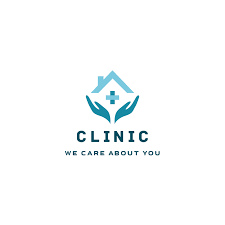
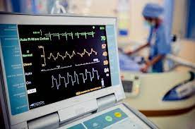
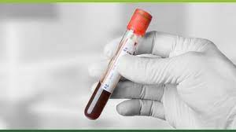
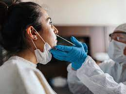

Sweta Clinic
While Sweta Clinic typically provide primary or preventive care, they can also provide other service like ECG,Blood checkup,Covid test,Any services etc.

Facilities provided in clinic
shewta clinic organis free medical cheakup on 11/11/2021
so, we request to all of you please come for cheakup and we also providing ECG,Blood cheakup,COVID test,Any services etc.Its a hamble request to all for you.That you now in this time COVID 19 is a very dangrous Virus.

Electrocardiography is the process of producing an electrocardiogram.It is a graph of voltage versus time of the electical activity of the heart using electrodes placed on the skin.

Blood Tests can be used for many different things, including to check cholesterol and blood glucose level.

Rapid tests are at their most reliable when used in people who have symptoms,scientists say.In those cases,rapid tests hold up well against the PCR tests processed in labs, which are typically used to diagnose Covid-19 by doctors and generally take a day or more to process..
ADDRESS-NEAR Scooter India chauraha
Thanks to all... and please visit our Clinic